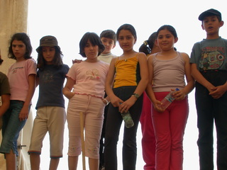
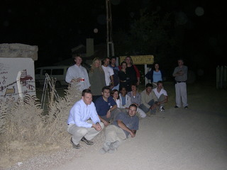
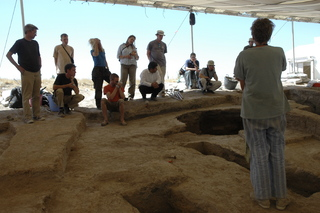
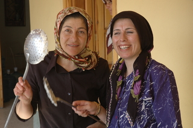
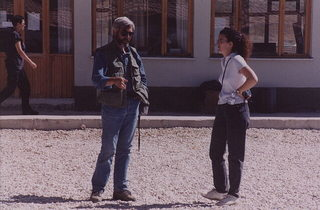
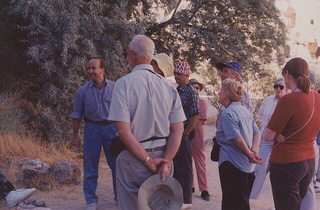
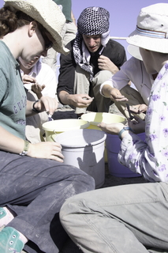
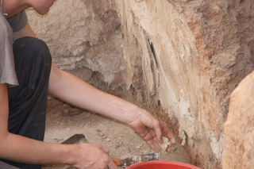
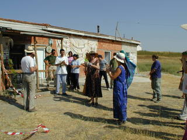

Catal Vision API Tests
Intro
0.1
Comments, ideas in random order
1
Some general introspection
1.1
Frequency of all labels
1.2
Frequency of unique labels
1.3
Distribution of scores
1.4
Top ranking labels (on average)
1.5
Score distribution for those top ranking labels
1.6
Most used labels (more than 50 times) and their mean scores
1.7
Highest scoring labels (GV over 0.8, CP over .95) and their frequency
2
OCR images with extracted text
3
CP Label: “adult”
4
CP Label: “architecture”
5
CP Label: “building”
6
CP Label: “cave”
7
CP Label: “cement”
8
CP Label: “dirty”
9
CP Label: “geology”
10
CP Label: “group”
11
CP Label: “man”
12
CP Label: “no person”
13
CP Label: “people”
14
CP Label: “rock”
15
CP Label: “sand”
16
CP Label: “soil”
17
CP Label: “stone”
18
CP Label: “texture”
19
CP Label: “travel”
20
CP Label: “wall”
21
CP Label: “woman”
22
GV Entity: “Archaeology”
23
GV Entity: “Çatalhöyük”
24
GV Entity: “Laborer”
25
GV Label: “ancient history”
26
GV Label: “archaeology”
27
GV Label: “archaeological site”
28
GV Label: “artifact”
29
GV Label: “building”
30
GV Label: “fauna”
31
GV Label: “geology”
32
GV Label: “rock”
33
GV Label: “ruins”
34
GV Label: “sand”
35
GV Label: “social group”
36
GV Label: “soil”
37
GV Label: “structure”
38
GV Label: “wall”
39
Images 1-100
40
Images 101-200
41
Images 201-300
42
Images 301-400
43
Images 401-500
44
Images 501-600
45
Images 601-700
46
Images 701-766
Published with bookdown
Catal Image Vision API Tests
Chapter 21
CP Label: “woman”
Table 21.1:
‘woman’ - confidence score > 0.95
col1
col2









NA
NA
NA
NA
NA
NA
NA
NA
NA
NA
NA
NA
NA
NA
NA
NA